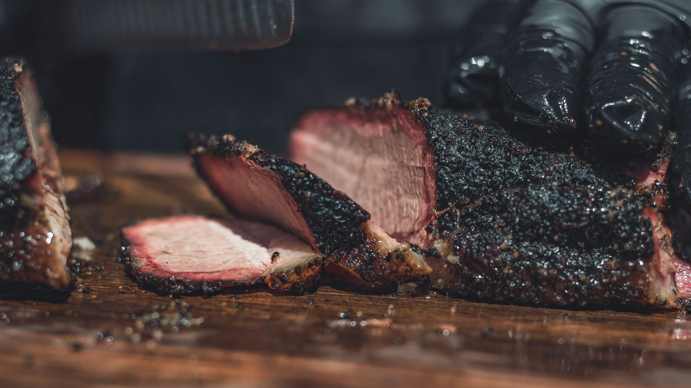

Brisket Recipe

A centerpiece dish for a standout meal.
Description
Brisket is the ultimate comfort dish, slow-cooked until fork-tender with layers of smoky, savory richness. This hearty cut transforms with time, yielding a melt-in-your-mouth texture that pairs beautifully with simple spices. Brisket is a centerpiece meal, ideal for gatherings or family dinners.
Instructions
Ingredients
- 1 whole beef brisket (3-4 lbs)
- 2 tbsp olive oil
- 1 tbsp salt
- 1 tbsp black pepper
- 1 tbsp smoked paprika
- 1 tsp garlic powder
- 1 onion, sliced
Steps
- Trim brisket of excess fat (i.e. that which will not render during bake/smoke).
- Heat oven to 300F (150C).
- Place brisket in a roasting pan with onions.
- Cover tightly with foil.
- Cook 3-4 hours until tender.
Navigation